No se encontraron noticias para esta búsqueda.

Septiembre 9, 2026
Ya están abiertas las postulaciones para LACONEU 2027 — VII Latin-American Summer School in Computational Neuroscience, que se realizará en Valparaíso, Chile, del 11 al 29 de enero de 2027. LACONEU reúne a estudiantes, j…
Leer artículo completo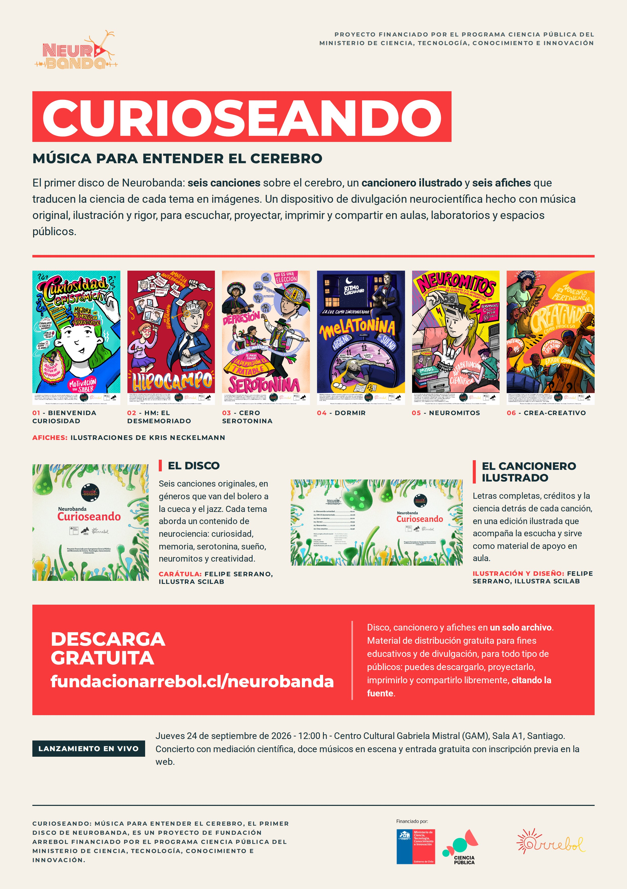
Septiembre 9, 2026
Presentamos Curioseando: música para entender el cerebro , el primer disco de Neurobanda, un proyecto de Fundación Arrebol financiado por el programa Ciencia Pública del Ministerio de Ciencia, Tecnología, Conocimiento e …
Leer artículo completo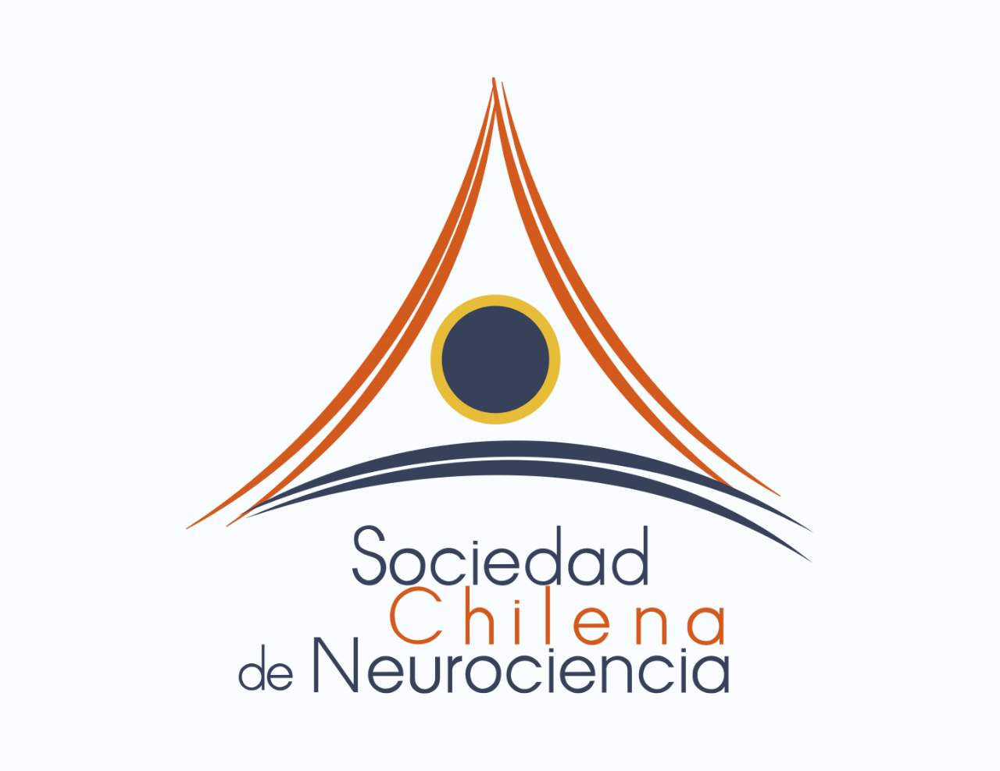
Agosto 12, 2026
Citación a Asamblea General Ordinaria de Socios Por acuerdo del Directorio y de conformidad con lo establecido en el Art. 15° de los Estatutos, se cita a Asamblea General Ordinaria de Socios de la Sociedad Chilena de Neu…
Leer artículo completo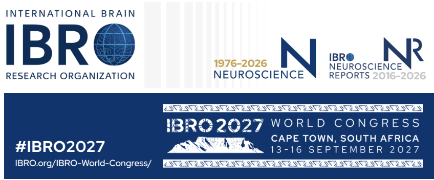
Julio 27, 2026
Se invita a la comunidad científica a participar activamente en el programa del próximo IBRO 2027 World Congress of Neuroscience , que se llevará a cabo en Ciudad del Cabo, Sudáfrica, en septiembre de 2027. Actualmente s…
Leer artículo completo
Julio 15, 2026
…
Leer artículo completo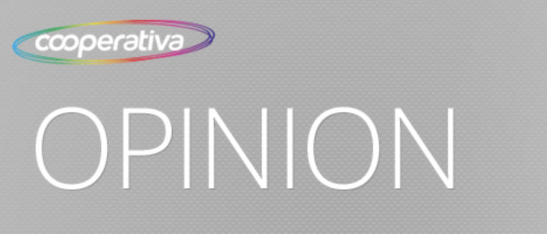
Julio 15, 2026
Cada otoño del Hemisferio Norte, decenas de miles de investigadores provenientes de todos los rincones del mundo convergen en ciudades rotativas (un año Washinton D.C., San Diego, Chicago), para participar en la reunión …
Leer artículo completo
Junio 4, 2026
Researchers are now invited to propose scientific symposia that will help shape the scientific program of the IBRO 2027 World Congress of Neuroscience. The Scientific Program Committee welcomes proposals addressing timel…
Leer artículo completo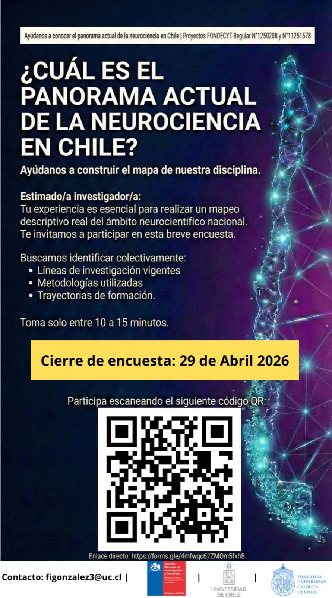
Abril 24, 2026
Los invitamos a participar en una encuesta breve cuyo objetivo es realizar un mapeo descriptivo del campo neurocientífico en Chile, identificando líneas de investigación, metodologías, escalas de análisis, trayectorias f…
Leer artículo completo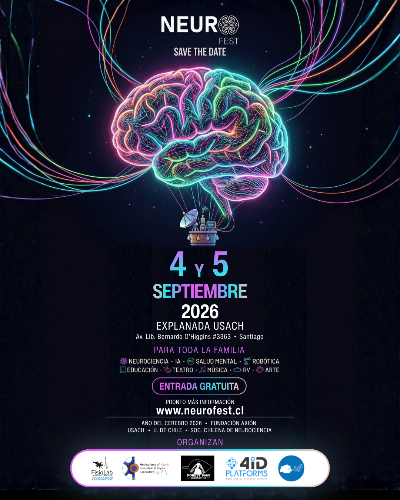
Abril 22, 2026
Estimado/as colegas, Tenemos el agrado de invitarlos a participar en la segunda versión de NeuroFest: La Feria del Cerebro. NeuroFest es un espacio de encuentro entre la comunidad neurocientífica y la ciudadanía, creado …
Leer artículo completo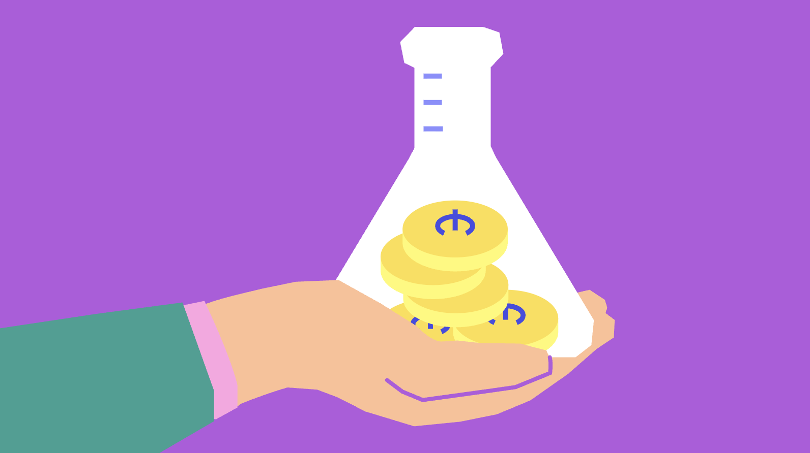
Abril 16, 2026
Estimadas, Estimados, Nos complace compartir con ustedes una oportunidad dirigida a investigadores en el marco de la convocatoria actualmente abierta para las C átedras de profesores juniors ( Chaires de professeurs juni…
Leer artículo completo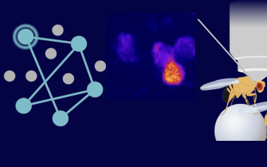
Abril 9, 2026
We are recruiting three postdoctoral fellows and one research assistant/PhD student to join a Wellcome Trust-funded programme, ‘Decoding competition in the brain’, in the lab of Prof. Carolina Rezaval at the University o…
Leer artículo completo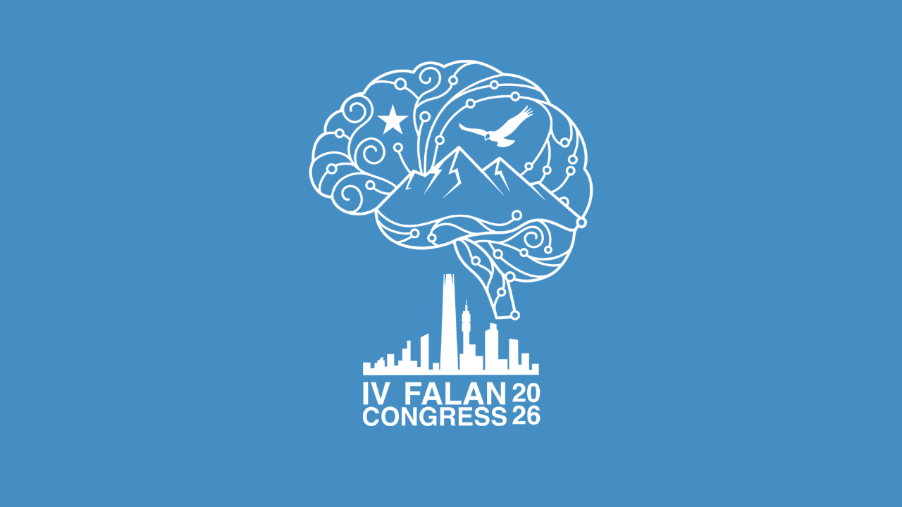
Marzo 12, 2026
Estimados/as socios/as: Tenemos buenas noticias. Con el objetivo de facilitar la inscripción al IV Congreso FALAN aprovechando la tarifa inicial reducida, la organización ha decidido extender el plazo hasta el 2 de abril…
Leer artículo completo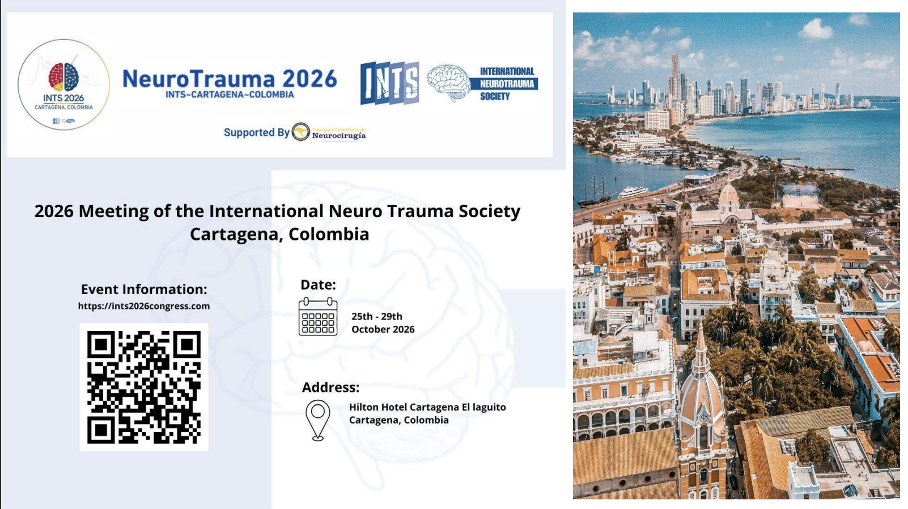
Marzo 11, 2026
NeuroTrauma 2026: La cita global de la neurociencia llega a Cartagena Extendemos la invitación al próximo 2026 Meeting of the International Neurotrauma Society (INTS) , que tendrá lugar del 25 al 29 de octubre de 2026 en…
Leer artículo completo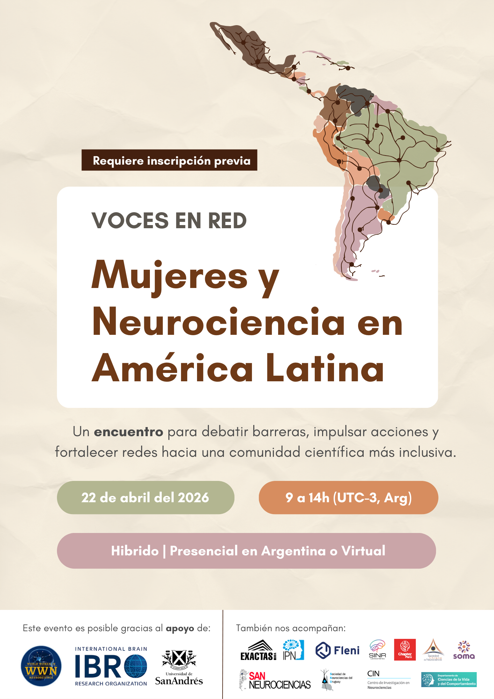
Marzo 10, 2026
¡Abrimos las inscripciones para el Encuentro de Mujeres en Neurociencias de Latinoamérica! Te invitamos a participar de este encuentro orientado a visibilizar las barreras que enfrentan las mujeres en el campo de las neu…
Leer artículo completo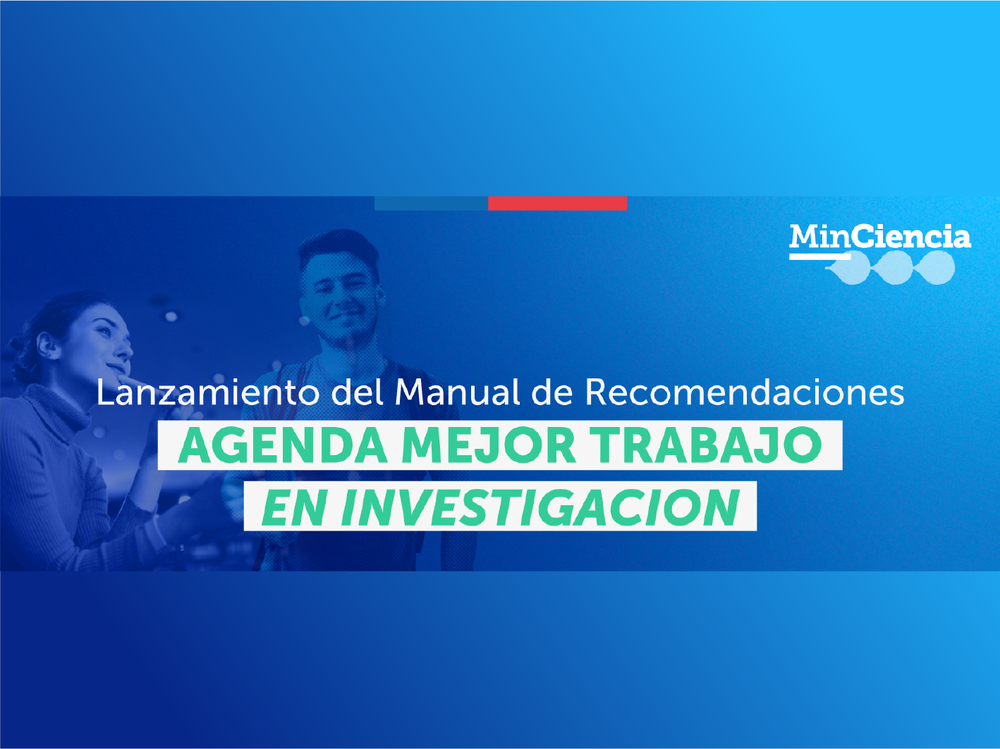
Marzo 3, 2026
Estimadas y estimados Tenemos el agrado de invitarles al lanzamiento del Manual de Recomendaciones de la Agenda Mejor Trabajo en Investigación , documento impulsado por el Ministerio de Ciencia, Tecnología, Conocimiento …
Leer artículo completo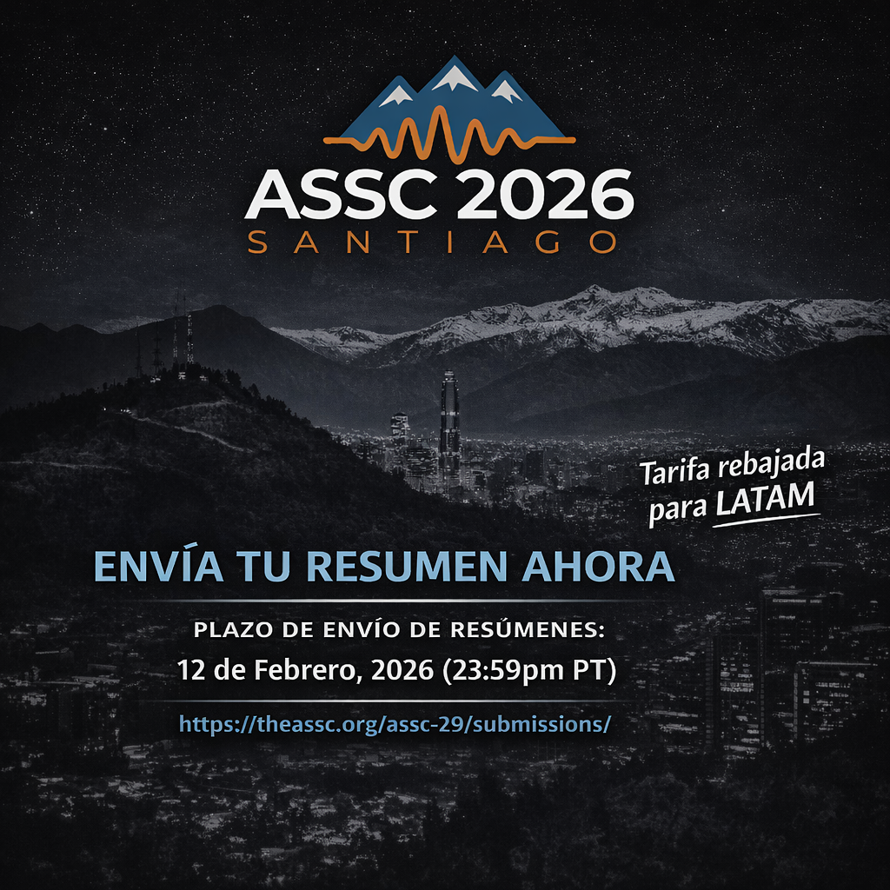
Febrero 10, 2026
La Association for the Scientific Study of Consciousness (ASSC) invita a la comunidad científica a participar en su 29th Annual Meeting (ASSC 2026) , que se realizará en Santiago de Chile entre el 30 de junio y el 3 de j…
Leer artículo completo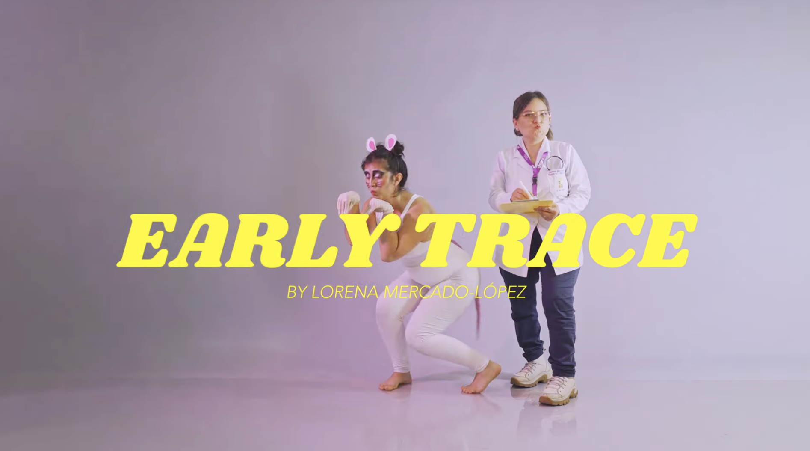
Enero 26, 2026
Ya se puede ver la propuesta de Lorena Mercado-López para el prestigioso concurso de la Asociación Estadounidense para el Avance de la Ciencia (AAAS). En esta pieza, Lorena logra traducir años de compleja investigación d…
Leer artículo completo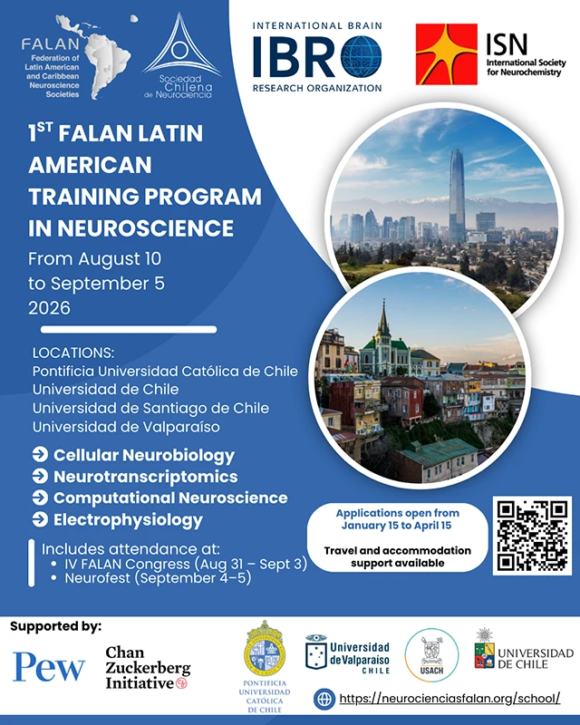
Enero 22, 2026
The FALAN Latin American Training Program in Neuroscience is a regional initiative designed to enhance neuroscience education by providing high-quality, continuous training for graduate students across Latin America. Sel…
Leer artículo completo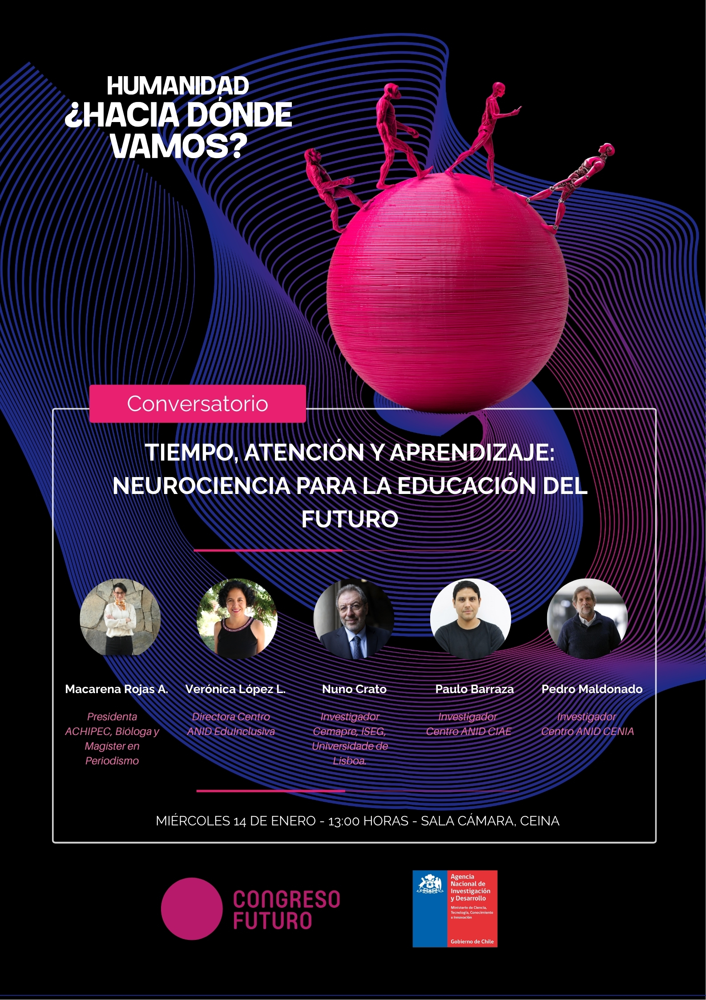
Enero 13, 2026
Estimados y estimadas: Les invitamos a ser parte del Conversatorio “ Tiempo, atención y aprendizaje: neurociencia para la educación del futuro” , organizado por ANID y Congreso Futuro 202 6 . La actividad se realizará el…
Leer artículo completo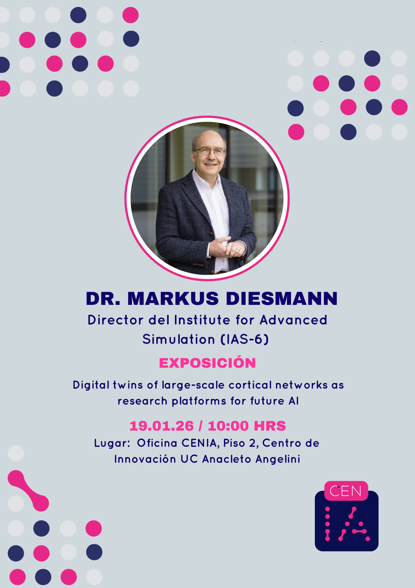
Enero 12, 2026
Cenials: Junto con saludar, tenemos el agrado de invitarles a participar de nuestro próximo seminario CENIA, que se realizará el Lunes 19 de enero a las 10:00 AM. El seminario será abierto y es una instancia presencial. …
Leer artículo completo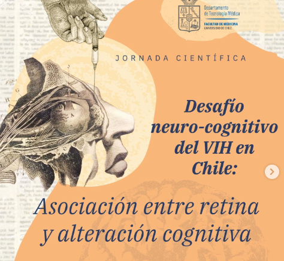
Enero 9, 2026
Jornada Científica “Desafío neurocognitivo del VIH en Chile: asociación entre retina y alteración cognitiva” , dirigida por el académico del Dpto. de Tecnología Médica U. de Chile, Prof. Iván Plaza Rosales, PhD. El Trast…
Leer artículo completo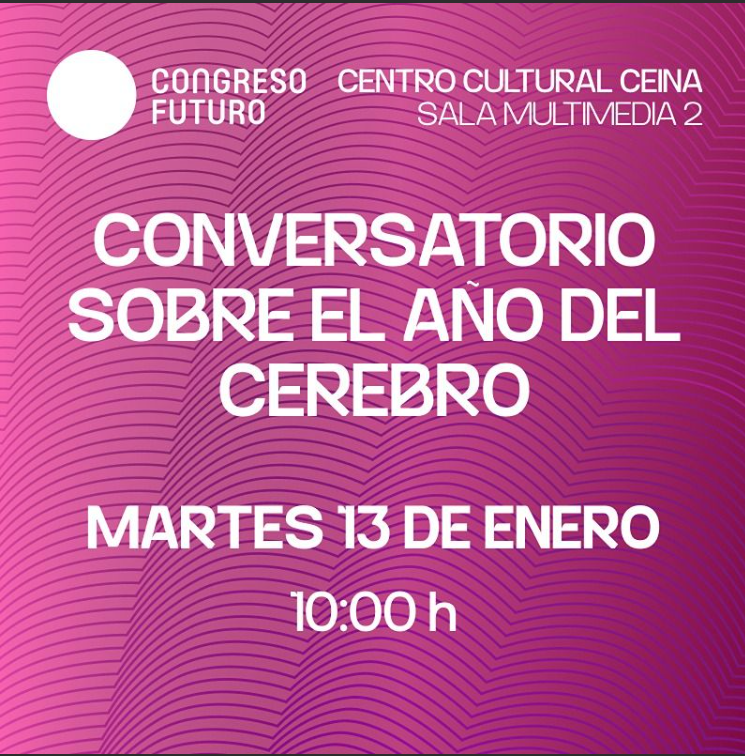
Enero 7, 2026
Año del Cerebro El Año del Cerebro Chile 2026 se impulsa como una iniciativa país para responder a los profundos cambios sociales, culturales y tecnológicos que están impactando la salud mental, el aprendizaje, la creati…
Leer artículo completo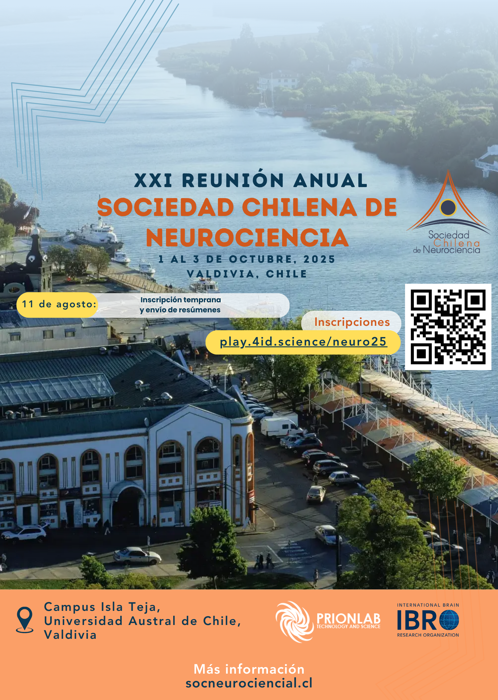
Agosto 4, 2025
Más información: https://socneurociencia.cl/congreso-2025/…
Leer artículo completo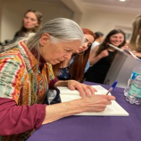
Abril 10, 2025
Katia Gysling Caselli fue una destacada investigadora que dedicó su vida a entender el funcionamiento del cerebro. En particular se dedicó a estudiar las bases neurobiológicas de la adicción y los mecanismos celulares y …
Leer artículo completo